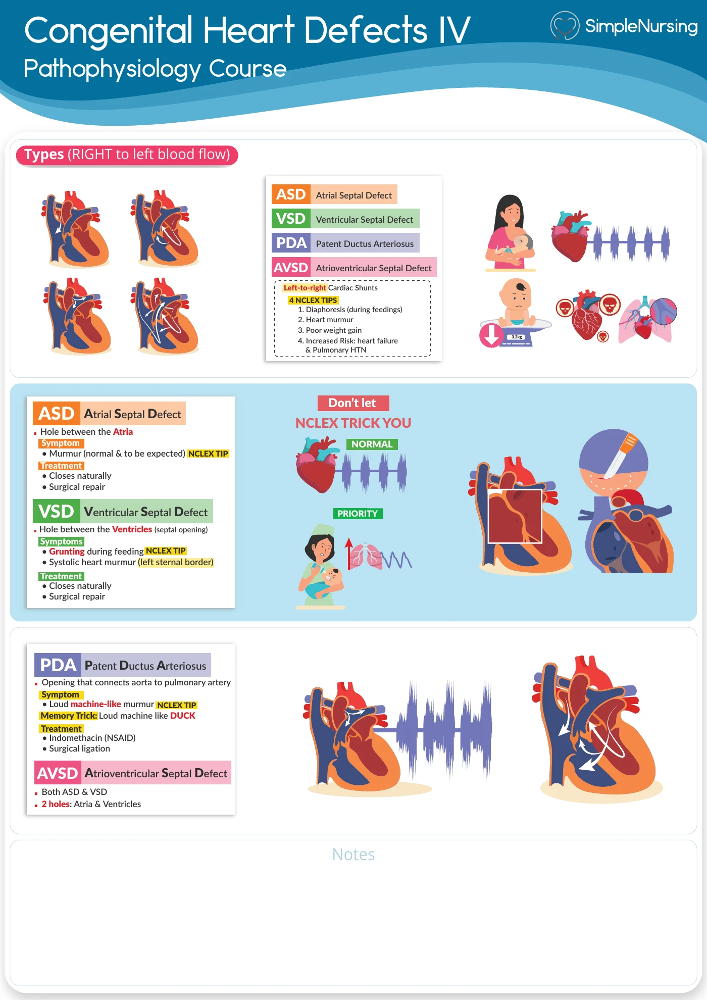

🫀 Cardiac · NUR 235 · Module 9
Patent ductus arteriosus
Classic sound: continuous, machinery-like murmur — a machine-like whoosh through systole and diastole. A large shunt can cause fast breathing, feeding fatigue and poor growth.

🔊 What does the PDA murmur sound like?
For the question shown: choose machinery-like murmur.
- Sound: a continuous rough whooshing or machinery quality.
- Timing: heard through systole and diastole; it continues across S2.
- Listen: upper left sternal border, near the left clavicle.
Memory: OPEN PIPE → FLOW KEEPS GOING → MACHINE-LIKE WHOOSH.
▶ Hear an actual PDA murmur recording · MSD Manual ↗
Why the other choices do not fit: sonorous describes a snoring quality; crescendo means increasing loudness, not the characteristic PDA sound; purring is not the classic PDA description.
Clinical side note: some newborns, especially preterm infants, have a systolic murmur or no audible murmur. The classic exam association remains machinery-like. Clinical reference: MSD Manual ↗
Study notes
Important contrast: duct-dependent defects may need prostaglandin to KEEP the duct open.
⚙ Pathophysiology
- A persistent connection between aorta and pulmonary artery usually causes a left-to-right shunt.
🩺 Nursing actions
- Assess respiratory effort, feeding, weight and perfusion.
- Monitor ordered medicines and fluid balance.
💊 Treatment
- Selected preterm infants: medicine to close the duct.
- Catheter or surgical closure when indicated.
🏠 Patient & family education
- Keep cardiology follow-up.
- Report increased breathing effort or poor feeding.
🗝 Visual mnemonic key
A PIPE remains OPEN between aorta and pulmonary artery. OPEN PIPE = MACHINE-LIKE WHOOSH. CLOSE unwanted PDA; KEEP OPEN when life depends on it.
The cartoon objects are memory symbols. The labeled anatomy beside them is the medical illustration.
Original Simple Nursing handout
The matching Heart Defects: ASD, VSD, PDA & AVSD handout includes PDA. It is shown unchanged below. Read its flow heading with this correction: uncomplicated PDA usually shunts left to right, as the handout’s inset correctly states; the top “RIGHT to left” heading is misleading.

Where this fits in the course
Based on the supplied course maps and case-study topics. This concise visual companion adds original illustrations and memory aids; the original teaching files remain available.
Supplemental references for this system
Illustrations show typical features, not every possible presentation. Medication and procedure decisions follow the individual clinical plan. Original mnemonics are not affiliated with Picmonic.